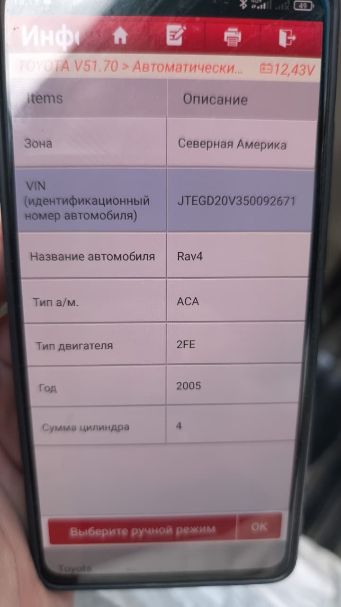
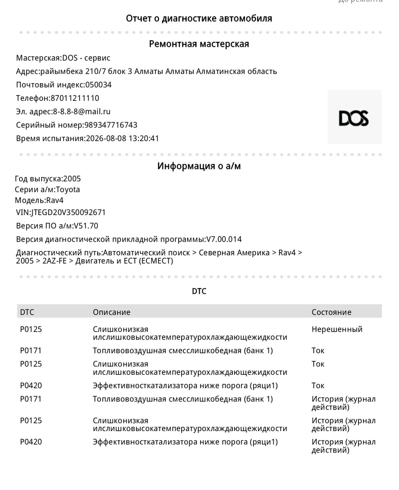
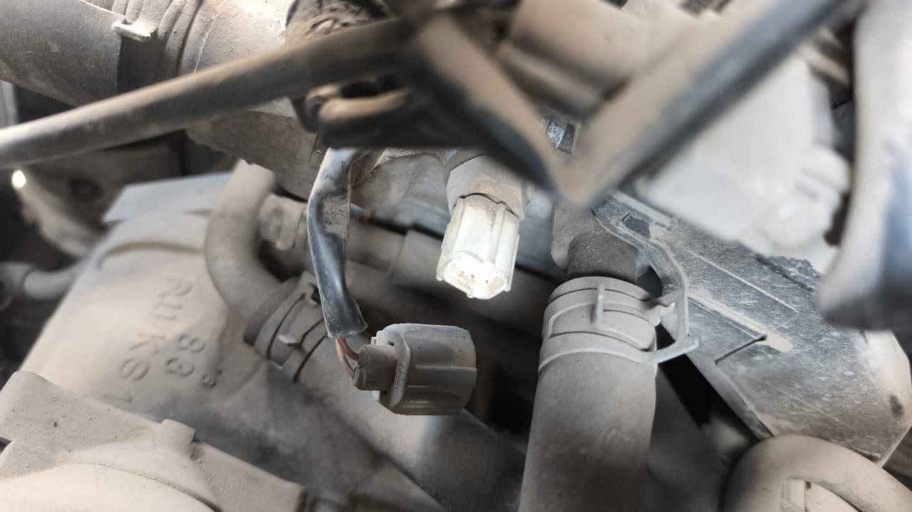

🚗 Toyota RAV4 2005 — нестабильные показания температуры охлаждающей жидкости

🚨 Жалоба владельца
На компьютерную диагностику поступил Toyota RAV4 2005 года выпуска, американская версия.
Основная жалоба владельца — некорректная работа датчика температуры охлаждающей жидкости. Во время движения показания температуры были нестабильными: датчик мог показывать завышенное значение, а затем резко опускаться вниз.
Для определения причины была проведена компьютерная и ручная диагностика системы охлаждения и двигателя.
🔍 Что показала компьютерная диагностика?

При подключении диагностического оборудования были обнаружены следующие ошибки:
- ⚠️ P0125 — двигатель автомобиля не нагревается до нужной температуры за обычное время.
- ⚠️ P0171 — слишком бедная топливовоздушная смесь, Bank 1.
- ⚠️ P0420 — эффективность каталитического нейтрализатора ниже установленного порога.
Ошибка P0125 присутствовала как текущая, сохранённая и ожидающая.
По результатам первичной диагностики было принято решение отдельно проверить фактическую работу датчика температуры и его показания в текущих параметрах.
📊 Проверка текущих параметров
Во время наблюдения за текущими параметрами двигателя было замечено, что показания температуры охлаждающей жидкости нестабильны.
Значение температуры изменялось некорректно и не соответствовало нормальной работе двигателя.
После этого была проведена ручная проверка самого датчика.
🛠️ Поиск причины неисправности

При визуальном осмотре и ручной проверке был обнаружен физический дефект датчика температуры охлаждающей жидкости.
Датчик прокручивался внутри своей основы, из-за чего его работа была нестабильной и показания температуры могли изменяться.
Таким образом, причина некорректных показаний температуры была подтверждена непосредственно при ручной диагностике.
🔧 Выполненные работы
В рамках диагностики были выполнены:
- ✅ компьютерная диагностика двигателя;
- ✅ считывание кодов неисправностей;
- ✅ анализ текущих параметров температуры охлаждающей жидкости;
- ✅ проверка работы датчика в реальном времени;
- ✅ визуальный осмотр датчика;
- ✅ ручная проверка механического состояния датчика;
- ✅ выявление физического дефекта датчика.
По оставшимся ошибкам P0171 и P0420 владельцу были даны рекомендации провести дополнительную диагностику топливной системы и определить причину обеднения смеси и снижения эффективности каталитического нейтрализатора.
📋 Рекомендации
По результатам диагностики рекомендовано:
- 🔧 заменить неисправный датчик температуры охлаждающей жидкости;
- ⛽ провести диагностику топливной системы для поиска причины ошибки P0171;
- 🔍 дополнительно проверить подсос воздуха и параметры топливной коррекции;
- ♻️ после устранения основных неисправностей повторно проверить ошибку P0420 и эффективность работы каталитического нейтрализатора.
Важно не менять катализатор только на основании ошибки P0420 — сначала необходимо устранить возможные проблемы со смесью и убедиться в корректной работе двигателя.
💡 Полезный совет автоэлектрика
Если стрелка температуры или показания температуры охлаждающей жидкости начинают скакать, резко подниматься или опускаться, не стоит сразу менять термостат или другие элементы системы охлаждения.
Сначала необходимо проверить:
- 🌡️ сам датчик температуры;
- 🔌 его разъём и проводку;
- 📊 показания датчика в текущих параметрах;
- 💻 ошибки блока управления двигателем.
В данном случае компьютерная диагностика показала проблему по температуре, а ручная проверка позволила обнаружить механический дефект самого датчика.
❓ Когда нужна компьютерная диагностика?
Обратиться на диагностику рекомендуется, если:
- температура двигателя отображается неправильно;
- показания температуры резко меняются;
- загорелся Check Engine;
- появились ошибки P0125;
- двигатель работает нестабильно;
- увеличился расход топлива;
- появились ошибки по топливной смеси.
⚙️ Что входит в диагностику?
Во время диагностики выполняются:
- 💻 считывание ошибок ЭБУ;
- 📊 анализ текущих параметров двигателя;
- 🌡️ проверка температуры охлаждающей жидкости;
- 🔌 проверка датчиков и их цепей;
- 🔍 ручной осмотр подозрительных компонентов;
- ⛽ анализ топливных коррекций;
- 🔄 повторная диагностика после ремонта.
⭐ Результат диагностики
Основная причина нестабильных показаний температуры была обнаружена — датчик температуры охлаждающей жидкости имел механический дефект и прокручивался внутри корпуса.
По дополнительным ошибкам P0171 и P0420 владельцу даны рекомендации по дальнейшей диагностике топливной системы и проверке каталитического нейтрализатора.
🔎 Важный момент по ошибке P0125
Ошибка P0125 не всегда напрямую связана с неисправностью датчика температуры охлаждающей жидкости.
В некоторых случаях причиной появления этого кода может быть неправильная работа лямбда-зонда (датчика кислорода) либо нарушение состава топливовоздушной смеси.
Блок управления двигателем анализирует сразу несколько параметров — температуру охлаждающей жидкости, работу кислородных датчиков, топливные коррекции и другие показатели. Поэтому при появлении P0125 важно не ограничиваться простой заменой датчика температуры, а провести полноценную компьютерную диагностику и проверить текущие параметры.
В данном случае при проверке было установлено, что сам датчик температуры действительно имел механический дефект — он прокручивался внутри своей основы, что могло приводить к нестабильным показаниям.
👨🔧 Работы выполнил автоэлектрик Олег.
☎️ 8-701-121-11-10 Олег
Читайте также: «Как проверить датчик температуры охлаждающей жидкости» и «Toyota Hiace 2018 не заводится».
Нужна помощь? Компьютерная диагностика авто в Алматы — выезд по городу и области.